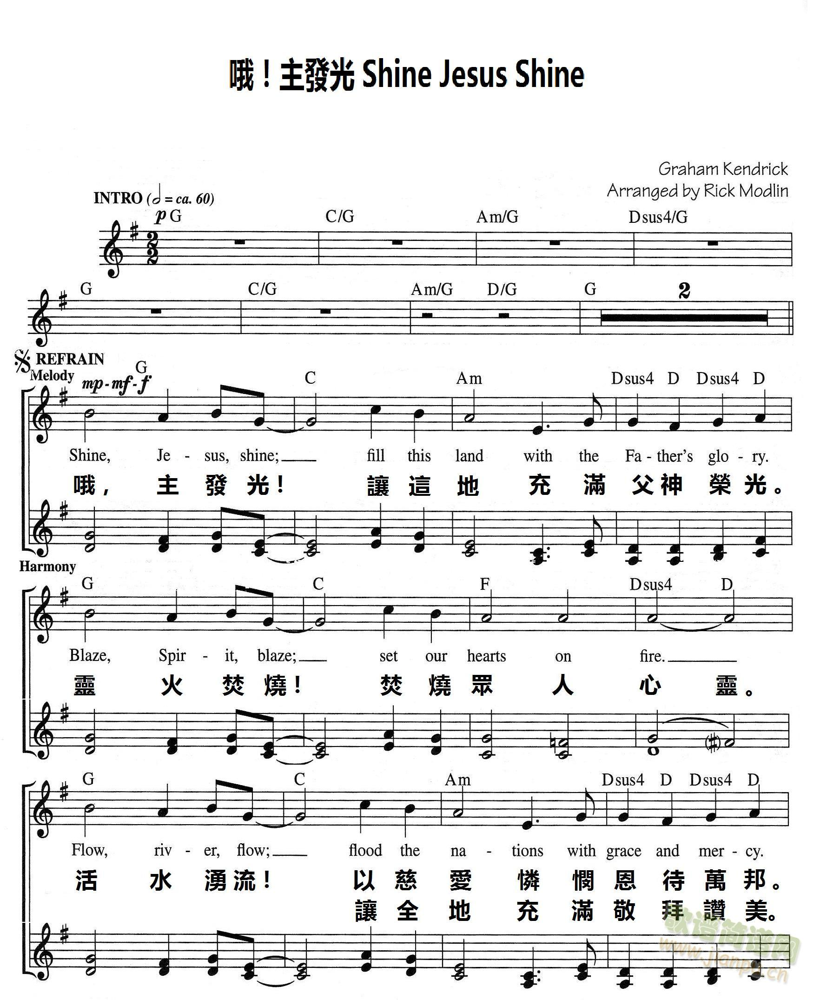

1379 Shine, Jesus, Shine
_Graham Kendrick
●
眞光普照
|
|
|
Lord the light of Your love is shining,
In the midst of the darkness, shining;
Jesus, Light of the world, shine upon us,
Set us free by the truth You now bring us,
Shine on me, Shine on me.
Lord, I come into Your awesome presence,
From the shadows into Your radiance;
By the blood I may enter Your brightness,
Search me, try me, consume all my darkness.
Shine on me, Shine on me.
As we gaze on Your kingly brightness,
So our faces display Your likeness,
Ecer changing from glory to glory,
Mirrowed here may our lives tell Your story.
Shine on me, shine on me.
Chorus:
Shine, Jesus, shine, Fill this land with the Father's glory;
Blaze, Spirit, blaze, Set our hearts on fire.
Flow, river, flow, Flood the nations with grace and mercy;
Send forth Your Word, Lord, And let there be light.
|
主愛光輝正照耀人間，照遍黑暗地方像明燈；
主基督乃真光照亮萬邦，賜予真理，使釋放離罪鎖。
照耀我靈，照亮我心。
主，我依近你威嚴座前，撇棄幽暗投向你榮耀；
靠主寶血今得進入光明，鑒察、試煉、洗清一切罪污。
照耀我靈，照亮我心。
當定睛瞻仰君王光輝，讓我彰顯主聖範形像；
從榮耀到榮耀不斷更新，在我身上反映救主生命。
照耀我靈，照亮我心。
副歌：
真光普照，充滿天地乃聖父榮耀，
火焰聖靈熾熱千顆心。
主愛湧流，施恩典、憐憫，救贖眾生；
請賜真理，將主光輝照遍。
|
|


|
| |
|
https://musescore.com/user/11976356/scores/6567188
https://youtu.be/_FuW20MYAK4
Shine Jesus Shine - Modern Worship Hymn by Graham Kendrick
http://www.hymncompanions.org/Nov/01/stream.php
甘杰克的詩歌中最有名的是
「真光普照」（Shine，Jesus Shine），其他我們熟悉的有
「軟化我心」（Soft
My Heart），
「耶穌賞賜新歌」（Jesus Put This Song into Our
Heart），
「主，憐憫我們」（Lord, Have Mercy），
「願耶穌的香氣充滿此地」（May
the Fragrance of Jesus Fill This Place）等。
真光普照 Shine，Jesus，Shine
主愛光輝正照耀人間，
照遍黑暗地方像明燈；
主基督乃真光照亮萬邦，
賜予真理，使釋放離罪鎖。
照耀我靈，照亮我心。
主，我依近祢威嚴座前，
撇棄幽暗投向祢榮耀；
靠主寶血今得進入光明，
鑒察、試煉、洗清一切罪污。
照耀我靈，照亮我心。
當定睛瞻仰君王光輝，
讓我彰顯主聖範形像；
從榮耀到榮耀不斷更新，
在我身上返映救主生命。
照耀我靈，照亮我心。
（副歌）
真光普照，充滿天地乃聖父榮耀，
火焰聖靈熾熱千顆心。
主愛湧流，施恩典、憐憫，救贖眾生；
請賜真理，將主光輝照遍。
 (請點耳機收聽)
(請點耳機收聽)
中英文聖詩集參考
英文歌名 In
Your Way
新歌頌揚 318
英文歌名 Shine，Jesus，Shine
世紀頌讚 177
 Graham Kendrick
Graham Kendrick
https://www.umcdiscipleship.org/resources/history-of-hymns-shine-jesus-shine
"Shine, Jesus, Shine"
Graham Kendrick
The Faith We Sing, No. 2173
Graham Kendrick
Few Christian songs composed just 20 years ago have had such an immediate impact
on congregational singing as Graham Kendrick’s “Shine, Jesus, Shine” (also known
as “Lord, the light of your love is shining”).
Graham Kendrick (b. 1950), a native of Blisworth, Northamptonshire, England, now
resides in Kent. The son of a Baptist pastor, he began writing songs in the
early 1970s and today is one of the most prolific British Christian
singer-songwriters and worship leaders.
Initially trained as a teacher, he began his career as a singer/songwriter in
1972. He now has over 30 albums and 400 songs to his credit, and his songs are
sung throughout the world in many languages.
“Shine, Jesus, Shine” has been a song of hope at noteworthy events such as the
1996 Dunblane memorial service for 16 students and teacher who were tragically
killed, and the Tasmania massacre memorial service for the 40 people killed by a
lone gunman, also in 1996.
Other large gatherings that used the song include the Billy Graham crusades to
the largest ever open-air mass in 1995 in Manila, where Pope John Paul II is
said to have “swung his cane in time to the music.”
Mr. Kendrick says of the song’s origin: “Bearing in mind the worldwide
popularity of this song, perhaps the most surprising thing about the writing of
it is the ordinariness of the circumstances.
“I had been thinking for some time about the holiness of God, and how that as a
community of believers and as individuals, His desire is for us to live
continually in his presence. My longing for revival in the churches and
spiritual awakening in the nation was growing, but also a recognition that we
cannot stand in God’s presence without ‘clean hands and a pure heart.’ So I
wrote the three verses and ‘road tested’ it in my home church. Though there was
clearly merit to the song, it seemed incomplete, so as I was unable at the time
to take it any further, I put it back in the file.
“Several months later I was asked to submit new songs for a conference song
book, and as I reviewed this three-verse song, I realized that it needed a
chorus. I remember standing in my music room with guitar slung round my neck
trying different approaches. The line ‘Shine, Jesus, Shine’ came to mind, and
within about half an hour I had finished the chorus, all but some ‘polishing.’
Though I felt an excitement in my spirit at the time, I had no inkling at all
that it would become so widely used. There were other songs I rated more highly
at the time that most people have never heard of!”
Stanza one focuses on the light “shining in the midst of the darkness” and
Christ as the “Light of the World” (John 8:12). This Light “set[s] us free by
the truth...” (John 8:32).
Stanza two reflects on coming before the “awesome presence” of Christ, where
“the shadows [turn] into your radiance.” Christ’s brightness “consume[s] all my
darkness.”
The final stanza focuses on how Christ’s brightness may be reflected
in our lives as “our faces display your likeness.”
Charles Wesley’s famous hymn, “Love divine, all loves excelling,” is fleetingly
paraphrased as Christ’s brightness is “ever changing [us] from glory to glory”
as we mirror him. The third stanza concludes with a petition: “May our lives
tell your story.”
Mr. Kendrick’s efforts have been recognized in many ways, including a Dove Award
(1995) and an honorary doctorate of divinity from Brunel University (2000) in
West London.
“Shine, Jesus, Shine” was voted tenth in a 2005 survey of the United Kingdom’s
favorite hymns by the BBC’s Songs of Praise program.
Dr. Hawn is professor of sacred music at Perkins School of Theology.
https://www.grahamkendrick.co.uk/stories-behind-the-songs/stories-behind-the-song/shine-jesus-shine-lord-the-light-of-your-love-is-shining
Shine Jesus Shine, Graham's best known song was written in 1987 and has
proved to be enduringly popular not just in the UK but all round the world. It
deposed 'Jerusalem' from the BBC's Songs of Praise Top Ten Hymns survey and
consistently appears as one of the top songs in the CCL (Church Copyright
Licence) chart both in the UK and USA.
In a recent interview Graham said:
"This song is a prayer for revival. A songwriter can give people words to voice
something which is already in their hearts but which they don't have the words
or the tune to express, and I think 'Shine Jesus shine' caught a moment when
people were beginning to believe once again that an impact could be made on a
whole nation."
Graham explains how the song came together...
"Bearing in mind the worldwide popularity of this song, perhaps the most
surprising thing about the writing of it is the ordinariness of the
circumstances. I had been thinking for some time about the holiness of God, and
how that as a community of believers and as individuals, His desire is for us to
live continually in his presence. My longing for revival in the Churches and
spiritual awakening in the nation was growing, but also a recognition that we
cannot stand in God's presence without 'clean hands and a pure heart'. So I
wrote the three verses and 'road tested' it in my home church. Though there was
clearly merit to the song, it seemed incomplete, so as I was unable at the time
to take it any further, I put it back in the file. Several months later I was
asked to submit new songs for a conference song book, and as I reviewed this
three verse song I realised that it needed a chorus. I remember standing in my
music room with guitar slung round my neck trying different approaches. The line
'Shine Jesus Shine' came to mind, and within about half an hour I had finished
the chorus, all but some 'polishing'. Though I felt an excitement in my spirit
at the time, I had no inkling at all that it would become so widely used. There
were other songs I rated more highly at the time that most people have never
heard of!"
'Shine Jesus Shine' has been sung at numerous high profile occasions such as;
The Dunblane Memorial Service, Tasmania massacre memorial service - broadcast
live nationwide, Prom Praise, Billy Graham crusades, and the largest ever open
air mass in Manilla where the Pope "swung his cane in time to the music"!!
The original version is available on a recently released anniversary edition of
the album 'Shine Jesus Shine'
Lord, the light of your love is shining
In the midst of the darkness, shining
Jesus, Light of the world, shine upon us
Set us free by the truth you now bring us
Shine on me, shine on me
Shine, Jesus, shine
Fill this land with the Father's glory
Blaze, Spirit, blaze
Set our hearts on fire
Flow, river, flow
Flood the nations with grace and mercy
Send forth your word
Lord, and let there be light
Lord, I come to your awesome presence
From the shadows into your radiance
By the blood I may enter your brightness
Search me, try me, consume all my darkness
Shine on me, shine on me
As we gaze on your kingly brightness
So our faces display your likeness
Ever changing from glory to glory
Mirrored here may our lives tell your story
Shine on me, shine on me
Graham Kendrick
Copyright © 1987 Make Way Music,
https://en.wikipedia.org/wiki/Shine,_Jesus,_Shine
From Wikipedia, the free encyclopedia
Jump to navigationJump
to search
"Shine, Jesus, Shine" (also known by
its first line, "Lord, the Light of Your Love") is a Christian praise
song written in 1987 by Graham
Kendrick.[1]
The song was voted tenth in a 2005 survey of
the United Kingdom's favourite hymns by the BBC's Songs
of Praise programme.[2] However, Damian
Thompson, editor-in-chief of the Catholic
Herald, called "Shine, Jesus, Shine" "the most loathed of all
happy-clappy hymns".[3]
The song was sung by the children of Department
of Social Welfare and Development staff and students from the Mary
Immaculate Parish Special School at Villamor
Air Base for the departure of Pope
Francis from the Philippines on 19 January 2015.[4][failed
verification] Its performance was meant to evoke World
Youth 1995, which the Philippines hosted, as well as the visit of
then-Pope
John Paul II.
https://weproclaimhim.com/?p=6383
按維基百科，以「為耶穌巡遊」為名的活動（March for
Jesus）於1983年在澳洲墨爾本首先舉行，後來不同地區也舉辦相類似活動。按記憶，「為耶穌巡遊」活動在1990年代初引入香港。到今日，這活動仍繼續舉行。
最近一次，是年初三的「耶穌愛香港，教會大巡遊」（今年是主辦單位第四年在年初三舉行），參加人數約有千人。主辦單位有向警務處申請遊行活動，所以，巡遊當日，繁忙彌敦道的部份行車線被封。按主辦單位說，這巡遊目的是祝福香港。
香港是一個宗教自由地方，遊行也得到一定的保障。警務處沒有拒絕主辦單位攪「教會大巡遊」。事實上，法輪大法也定期舉行巡遊，並得到警務處批准。所以，我們無須以阻礙交通或影響市民生活為由批評「教會大巡遊」，反而要從公民權利角度理解這事，即保障主辦者的公民權利。
巡遊是關乎看
若「教會大巡遊」的目的是祝福香港，重點應是接收者是否成功接收到這信息。有別於一般教會聚會，巡遊的特徵是「看」，不是「聽」。那麼，「教會大巡遊」是否好看？坦白說，「教會大巡遊」沒有甚麼好看。參與者沒有穿上特別服裝、手持橫額也沒有吸引之處、口號對很多人很陌生。
相反，道教的祈福巡遊就很不同。以2010年那次祈福巡遊為例，第一日在中環遮打花園行人專用區舉行，內容包括善氣迎祥祈福法會、神仙花炮八台、三百尺金龍巡遊活動。第二日在旺角麥花臣球場舉行，祈福法會以扼要簡明的方式，演繹中國古代「祈天禱福」儀式，透過築建的天壇，祭祝天地神靈，以展現古禮學說中「天人合一」的要義，即以祭天形式，保佑國泰民安及報答天地之恩。
祈福會上，八十一位道士，隨著悠揚道樂，踏上天壇，繞太極而行，並各按八卦方位守立，焚香上疏，宣達意文，祈求諸天庇佑祖國富強。祈福會後，巡遊沿彌敦道至油麻地窩打老道。相對於「教會大巡遊」，道教的祈福巡遊更有文化特色、內容和吸引力，並其祈福信息更能被接收。或許，主辦單位的矛盾就是不願意將「教會大巡遊」變為一場表現，但沒有表現成份的巡遊就算不上是巡遊了。
話說回來，「教會大巡遊」的主辦單位是否有就此活動進行檢討。教會組織往往有一習性，就是不會太著緊接收者反應，因為福音本身是不可量度的。這本是好事，因為教會始終是以價值理性為主，非工具理性。然而，這不等於主辦單位不需要留意接收者反應，不但因為這關乎資源運用，更因為這活動可能是自我陶醉、「自high」。
當然，若接收者的反應不理想不等於主辦單位不應再辦巡遊活動，反而可改善，甚至可考慮積極發展像長洲的飄色巡遊，達到與民共賞的目的（這活動每年都吸引數千人前往觀賞，並有媒體報導）。「教會大巡遊」主辦單位如何進行活動後評估？用甚麼準則做評估？評估報告是否有公開給參與者？評估後對其往後每年舉辦的「教會大巡遊」有何影響？
在公共空間的非公共事
有別於在教會內舉行的活動，「教會大巡遊」是在公共空間發生的，所以，主辦單位要向警務處申請。主辦單位選擇在公共空間進行宗教活動，不是因為教會空間不足，因為它認為這是一件關乎公共的事，即祝福香港。就著公共空間與公共事的關係，這牽涉三個課題：
（一）在公共空間發生的事不必然等於這是一件公共事。這只牽涉公民權利，而這與事件的公共性質無必然關係。反轉來說，公共事可以在教會內發生的。所以，「教會大巡遊」不會因它在鬧市進行而變成為公共事。
（二）一件事之所以是公共事，其中一個重要因素是與其他人士有關係。這不是一廂情願的關係，而是雙向的互動。例如，每年的七一遊行、長洲的飄色巡遊就有這元素。相對來說，「教會大巡遊」是單向的，與其他人士的互動很薄弱。
（三）與第二點相關，一件公共事必需讓周遭人明白它的關注。明白不需要認同，但不明白就很難達至成為公共事。然而，責任不在於旁觀者，卻在於主辦者。當「教會大巡遊」的宣傳對象主要是教會人士時，這是圈內活動多於公共事。
按以上理解，「教會大巡遊」無助將其關注變得公共性。為何主辦單位仍要辦這活動？為何仍有信徒參與？或許，當這活動被賦予一種神聖解釋時，別人如何看和別人是否明白不再是問題了。那麼，神聖解釋讓我們對事物有更豐富認識還是成為我們認識事物的一種障礙？
教會是聖禮
以上對「教會大巡遊」的反省無意否定主辦單位和參與的信徒之真誠。事實上，主辦單位提出了一個好重要的問題，即教會要成為上主對香港祝福的中介。神學上，教會是一個聖禮。教會是聖禮，不是因教會的選擇，而是因上主的道與靈。教會是聖禮，不在於教會如何有效地表達，而在於它已是。教會是聖禮，不只因它參與三一上主合一的奧秘，更因它指向眾生在上主裡合一。教會是聖禮，因它是為眾生，而非為自己的。
餘下的問題是：教會如何恰當地認識其身份，從而反思和策劃甚麼是在此時此地對上主祝福的合適演譯。
（封面相片來源：DIG
WELL MEDIA HOUSE；2016 耶穌愛香港 初三教會大巡遊影片截圖。）

https://en.wikipedia.org/wiki/March_for_Jesus

From Wikipedia, the free encyclopedia
Jump to navigationJump
to search
March for Jesus is an annual interdenominational event
in which Christians march through towns and cities.
History[edit]
The March for Jesus began as a City March in London, United
Kingdom, in 1987.[1] [2]It
emerged from the friendship of three church groups: Pioneer, led
by Gerald
Coates; Ichthus led
by Roger
Forster; and Youth
with a Mission led by Lynn
Green.[3] Together
with the worship leader Graham
Kendrick, they led a movement which over the next three years spread
across the UK, Europe and North America, and finally across the world.
Hundreds of smaller marches emerged in its wake.
The march was established in several countries of the world, especially
in France in
1991,[4] [5] in
the United
States in 1992 [6] and
in Brazil in
1993, where it gathered 3 million people in São
Paulo in 2019, one of the largest Christian gatherings in the world. [7]
Further reading[edit]
- Graham Kendrick, Gerald Coates, Roger
Forster and Lynne Green with Catherine Butcher, March for Jesus (Eastbourne:
Kingsway, 1992)
- Graham Kendrick Public Praise (Altamonte
Springs: Creation House, 1992)
https://youtu.be/JzrbP8kuI_U Share the Vision — March for Jesus
2021
https://en.wikipedia.org/wiki/Graham_Kendrick
From Wikipedia, the free encyclopedia
Jump to navigationJump
to search
Graham Kendrick (born 2 August 1950)
is a prolific English Christian singer,
songwriter and worship
leader. He is the son of Baptist pastor,
M. D. Kendrick and grew up in Laindon,
Essex and Putney.[1] He
now lives in Tunbridge
Wells and is a member of Holy Trinity with Christ Church, Tunbridge
Wells. He is a member of Ichthus
Christian Fellowship. Together with Roger
Forster, Gerald
Coates and Lynn Green, he was a founder of March
for Jesus.
Kendrick began his songwriting career in the
late 1960s. His most successful accomplishment is his authorship of the
lyrics and music for the song, "Shine,
Jesus, Shine", which is among the most widely heard songs in
contemporary Christian worship worldwide. His other songs have been
primarily used by worshippers in Britain. Kendrick is a co-founder of the March
for Jesus. He received a Dove
Award in 1995 for his international work. In 2000, London
School of Theology and Brunel
University awarded Kendrick an honorary
doctorate in Divinity ('DD')
in "recognition of his contribution to the worship life of the Church".[2] He
was awarded another DD in May 2008, from Wycliffe
College in Toronto,
Canada.[3]
Although now best known as a worship leader
and writer of worship songs, Graham Kendrick began his career as a member
of the Christian beat group Whispers of Truth (formerly the
"Forerunners"). Later, he began working as a solo concert performer and
recording artist in the singer/songwriter tradition. He was closely
associated with the organisation Musical Gospel Outreach and recorded
several albums for their record labels. On the first, Footsteps on the
Sea, released in 1972, he worked with the virtuoso guitarist Gordon
Giltrap.
Kendrick worked for a time as a member of
"In the Name of Jesus", a mission team led by Clive
Calver. He was based at St Michael le Belfrey church in York in the
late 1970s and was involved in student and university ministry with
British Youth
for Christ. At this time he recorded the albums Triumph in the Air and Cresta
Run. Calver went on to run British Youth for Christ and the Evangelical
Alliance, and then left the United Kingdom for the Evangelical
Church in the United States. Kendrick, however, remained firmly fixed
in the UK church as probably the most influential Christian songwriter of
his generation.
Kendrick also released "Let the Flame Burn
Brighter" as a single in
1989, which reached 55 in the UK
Singles Chart.
He is a member of Compassionart,
a charity founded
by Martin
Smith from Delirious?.
In more recent years Kendrick has developed
the concept of "Psalm Surfing".[4]
In May 2020 he took part in The UK Blessing,[citation
needed] a worship song video collaboration of 65
churches released during the national coronavirus lockdown.
Popularity[edit]
"Shine, Jesus, Shine" is regularly highly
placed in hymn popularity polls.[5][6] Fellow
songwriter and former Kendrick bandmember Stuart
Townend has said, "I have no doubt that in 100 years time the name of
Kendrick will be alongside Watts and Wesley in
the list of the UK's greatest hymnwriters".[7] Kendrick
also has his critics, among them the journalist Quentin
Letts, who has described him as "king of the happy-clappy banalities".[8]
Discography[edit]
- Footsteps on the Sea (Key
Records) 1971
- Bright Side Up (Key Records)
1972
- Paid on the Nail (Key Records)
1974
- Breaking of the Dawn (Dovetail)
1976
- Fighter (Dovetail) 1978
- Jesus Stand Among Us (Dovetail)
1979
- Triumph in the Air (Glenmore
Music) 1980
- 18 Classics (Kingsway) 1981
- Cresta Run (Kingsway) 1981
- The King Is Among Us (Kingsway)
1981
- Nightwatch (Kingsway) 1983 -
cassette only release
- The Blame (Kingsway) 1983
- Let God Arise (Kingsway) 1984
- Magnificent Warrior (Kingsway)
1985
- Make Way for the King of Kings: A
Carnival of Praise (Kingsway) 1986
- Make Way for Jesus: Shine Jesus
Shine (Make Way Music) 1988
- Make Way for Christmas: The Gift (Make
Way Music) 1988
- Make Way for the Cross: Let the
Flame Burn Brighter (Make Way Music) 1989
- We Believe (Star Song) 1989
-
Amazing Love (Integrity's Hosanna!
Music) 1990
-
Crown Him (Integrity's Hosanna!
Music) 1991
- King of the Nations (Word UK)
1992
- Crown Him: The Worship Musical (Word
UK) 1992
- Spark to a Flame (Megaphone/Word
UK) 1993
- Rumours of Angels (Megaphone/Alliance)
1994
- Is Anyone Thirsty? (Megaphone/Alliance)
1995
- Illuminations (Megaphone/Alliance)
1996
- No More Walls (Make Way
Music/Alliance) 1997
- The Millennium Chorus (Millennium
Chorus Ltd) 2000
- What Grace (Make Way
Music/Furious!) 2001
- Do Something Beautiful (Make
Way Music/Furious!) 2003
- Sacred Journey (Make Way
Music/Furious!) 2004
- USA Live Worship (Make Way
Music) 2005
- Out of the Ordinary (Make Way
Music/Furious!) 2006
- Dreaming of a Holy Night (Make
Way Music/Furious!) 2007
- The Acoustic Gospels (Make Way
Music) 2010
- Banquet (Make Way Music) 2011
- Worship Duets (Make Way Music)
2013
- Keep the Banner Flying High (Make
Way Music) 2018
Singles[edit]
- "Let the Flame Burn Brighter" (single) (Make
Way Music) 1989
- No Scenes of Stately Majesty (E.P;
Megaphone/Alliance) 1998
Collections[edit]
- The Easter Collection (Make Way
Music/World Wide Worship) 2001
- Rumours of Angels / The Gift Double
CD (Make Way Music/Furious!) 2001
- The Prayer Song Collection (Make
Way Music/World Wide Worship) 2002
- The Psalm Collection (Make Way
Music/World Wide Worship) 2002
https://www.crossrhythms.co.uk/articles/music/Graham_Kendrick_Modern_worship_maestro_speaking_to_the_next_generation_/62899/p1/
Many historians would acknowledge Graham
Kendrick as the most influential hymnwriter of the last 100 years while he
has long been applauded as the father figure of the whole modern worship
movement. There's hardly a nation on earth which doesn't have churches where
Kendrick's classics like "Knowing You Jesus", "The Servant King", "Amazing
Love", "Meekness And Majesty", "Shine Jesus Shine" and "Thank You For The Cross"
aren't being sung. Those who might have thought that the 67-year-old
singer/songwriter was now going to rest on his laurels will have been impressed
by Kendrick's four singles/videos which have emerged in the last year and now
with the release, through Integrity Music, of his 'Keep The Banner Flying High'
live worship album.
'Keep The Banner Flying High' was recorded and filmed at Rosehill School Theatre
in Tunbridge Wells and produced by Kevan Frost, whose decades long music
experience has seen him work with everybody from Phatfish to Boy George. The
band accompanying Graham on the album is truly top-rate and features such
friends and stalwarts as Mark Edwards (keyboards, accordion), Matt Weeks
(guitar, mandolin), Raul D'Oliveira (trumpet, flugel horn) and guest vocalists
Jake Isaac and Mairi Neeves. Writing about the album on the sleeve, Graham and
Jill Kendrick acknowledged all their helpers, "What a privilege to work with you
on this recording! It was moving to look around at faces of friends with whom we
worship regularly and musicians with whom we've journeyed for so many years. You
all gave your best with true hearts and sincere enthusiasm in both public roles
and behind the scenes." The album is crammed with fine new Kendrick songs
ranging from two great co-writes with Jake Isaac, "As In Heaven" and "I Saw The
Lord", and a memorable re-imagining of the hymn words by the 18th century's
William Cowper "God Moves In A Mysterious Way".
Graham explained how some of the collaborations on the album came about. He
said, "I'm often invited to speak to Christian musicians and worship leaders and
songwriters. I'm still writing songs; I'm still doing it. Many of the songs I
write these days, I sit down with people of my own children's age, the next
generation, and we do it together. It's a very nice thing to do but it's also an
important thing to do. Psalm 71 talks about one generation telling the story to
the next generation. And I think every generation has that job to do. You speak
to your own generation but you also speak to the next generation and you try to
pass on what you know, what you've learnt. As a songwriter obviously that's one
of the best ways I can do it."
One of the best songs on the album is "Praise Him Moon And Stars". I asked him
how that song came into being. "For me, songs have a convoluted journey. This
one began with a sound I was getting on the guitar, first of all, using two
capos and a dropped E string. . . that's for guitar nerds. Anyway, that created
a kind of very resonant sound that was inspiring me and I started fiddling
around with melodic ideas. At the same time I'd been looking at an old hymn
lyric which begins with the words that this present song begins with which is
'Sweet is the work, my God and King, to praise your name, give thanks and sing'.
I'd have to check, I can't remember now if it was Isaac Watts or John Newton.
That became the starting point for the song. It started off a lot more
reflectively. But as I developed it and started to find the melody it seemed to
work better at that rhythmic pace. I'm sure that's how it goes with many
songwriters and creative people. You experiment, you try this way and that and
after a while you decide whether it's worth pursuing. So it was one of those. I
began to try it out, played it to one or two friends and it took shape. I
usually take songs through several versions; I tried it with a bridge and
without a bridge. For me it's kind of a process of elimination. You just write
something good and then try to make it better. But I think what I loved about it
was the simplicity and a kind of bright joyfulness and it made it through.
Because for every song I record and publish, there are several songs that don't
make it."

Did he really mean "several"? "Yes, I have heaps of what I call unfinished
songs. I think that's just the way it is with any creative person. On one level
it almost seems wasteful but I think if you were to go to a painter's studio,
for every finished canvas you'd probably see half a dozen leaning against the
wall that were abandoned and tried again. But then I sometimes think, well,
there might be a good reason why that song was never finished. Actually, it does
happen that I work on a song and I'm not satisfied with it and then it turns
into something else or maybe even years later, on a different idea, I find I've
handled the subject in a better way. So the temptation for me is to keep on
working away at a song when I should abandon it. Because there may be a better
one and I've just got trapped inside this one idea and I ought to try a
completely different angle. It's a mystery. To me, it's amazing that I finish
anything, actually."
A song on 'Keep The Banner. . ." which Graham did eventually finish, with the
help of Keith and Kristyn Getty, is "My Worth Is Not In What I Own". Graham
wrote on his website, "Lyricists are always on the lookout for a big idea, a
concept or phrase that might just have a song hidden inside it. Like the
sculptor running their fingers over a rough block of marble and laying out their
tools, or a potter feeling the weight and texture of a fresh lump of wet clay,
the imagination has to see something that doesn't yet exist. Some years ago I
was struck by the simple phrase 'my worth is not in what I own' and sensed a
'big idea' in waiting. It is a theme I have explored before in songs, in fact
one of my earliest performance songs is called 'How Much Do You Think You Are
Worth', but here it came again and I saw a congregational song in potential. I
made several attempts over several years to let loose that big idea, but during
a writing session with Keith and Kristyn Getty I bounced my seed idea off them
and the process began. The song went through numerous drafts and redrafts, but
eventually it settled. From the first occasion it was sung it was clear that the
theme resonated powerfully as people began to join in. We know that our culture
calibrates human worth by measures of wealth and status, skills and achievement,
beauty and youth, power and so on, but we don't always appreciate how deeply
those values are ingrained into us and how effective they are in driving our
behaviour. Christians are little different. We need to sing about our worth from
God's perspective, not ours or our cultures, and God's perspective centres in on
the cross.
"John Stott wrote, 'Our self is a complex entity of good and evil, glory and
shame, of creation and fall.. . we are created, fallen and redeemed, then
re-created in God's image. . . Standing before the cross we see simultaneously
our worth and unworthiness, since we perceive both the greatness of his love in
dying, and the greatness of our sin in causing him to die.' William Temple
wrote: 'My worth is what I am worth to God, and that is a marvellous great deal,
for Christ died for me.' It has been a pleasure working together with the Gettys
to bring this song from concept to reality and we hope that it will help many to
sing themselves free from all that steals away the joy of being loved by God."
Many followers of Graham's multi-faceted ministry will be surprised that he now
ministers at a COE church, Christchurch in Tunbridge Wells. I asked Graham what
kind of people have found a spiritual home at Christchurch. He said, "I think if
you were to do a survey in our church, you'd find a complete mixture of
backgrounds. I think many of the old distinctions, rooted in a certain way of
doing things, have gone. As I grew up, my father is a Baptist pastor and so it
was a local Baptist chapel and down the road was an Anglican church and they did
things completely differently. But now, I think, there are lots of similarities.
You can go to churches with lots of different labels and there are common
factors and ways of doing things. There is a liturgical element, particularly
with communion and we have regular use of confession but apart from that we're a
church that has a lot of sung worship. So we'll have a worship band and a whole
chunk in the morning service of sung worship and prayer ministry; things that
everybody is very familiar with these days."
Graham and I talk for a couple of minutes about our mutual hobby of collecting
old hymnbooks. Out of that talk, I observed that Graham has been skilled as both
a hymn writer and a modern worship composer. He responded, "I think it's just
been my journey. The years when I took on most musical influence were in the
'60s. I was growing up and listening to the Beatles and the pop music but at the
same time I was attending a Baptist church and the Baptist hymnbook was what we
sang from, most of what we sang was hymns. So I'm absorbing these different
influences of hymns and the popular music of the day. I guess that tends to come
out in my own writing. There are several things that work in all of this.
Culture is a very powerful thing. A lot of contemporary worship music today is
stylistically based on the music of bands like Coldplay in the '90s. There's
quite an intense emotion in there and that's great; it's a great genre for
certain kinds of expression. But it's not the whole story. I think music, as
well as being a great way to express the deep emotions of the heart, it's also a
great medium for carrying truth. Combining that with personal passion as well is
what Charles Wesley was so superb at. One of the radical things in his day was
that his songs were very personal. But also they were packed full with biblical
references and his brother, John Wesley, would be very stringent about the
doctrine. He'd sort of edit them, oh no, you can't put that word in there
because blah, blah, blah. So you've got this amazing combination of poetry,
theology and passion."
Warming to the theme of the hymns vs worship songs debate Graham continued, "We
need lots of different kinds of songs. But I think if there's an area where we
need more of a certain kind it is that area of content, strong content. With a
good hymn you look at it and you think 'this is worth memorizing. This is so
true and so well expressed that you could set it as a task in your Bible class'.
You could say, 'Memorise this and this will help you understand an aspect of
God.' I'd love to see much more of that. But at the same time, popular music
obviously is relating to a lot of people who have grown up with very short
attention spans because of the way the culture is and social media and
everything we have today. It's no good churning out - we don't do that,
'churning' is the wrong word - [it's not good writing hymns where] people are
never going to get past the second verse. We have to find that balance between
what is rich content but also what people in the present day and age can
actually absorb." 
The opinions expressed in this article are not necessarily those held by
Cross Rhythms. Any expressed views were accurate at the time of publishing but
may or may not reflect the views of the individuals concerned at a later date.
More Song Lyrics by Graham Kendrick
A Prince Is Born
· A
World Awakes
· Ain't
Nothing Like it
· All
Hail The Power
· All
Heaven Waits
· All
The Glory
· All
the Glory - He Shall Reign
· Amazing
Grace
· Amazing
Love
· And
He Shall Reign
· Anno
Domini
· Anywhere
You Walk
· Apostles
Creed
· Are
You Ready?
· Arise
- A Prayer for Peace
· Arise
Shine
· Ascension
Song
· Bad
Company
· Bad
Friday Blues
· Banquet
· Battle
Hymn
· Be
Glorified
· Be
Holy
· Beautiful
Mystery
· Beautiful
Night
· Being
Myself In Jesus
· Blessed
Are The Humble
· Break
Out With Songs of Joy
· Bring
Glory To The Lamb
· Broken
Hearts
· Building
a House
· Caiaphas
And The Temple Guard
· Can
You Believe It
· Can
You Believe It?
· Christ
Is King Of All Creation
· Come
And See
· Come
Bring An Offering of Praise
· Come
Die, Come Live
· Come
Let Us Return
· Come
Now Let Us Reason Together
· Come
See The Beauty of The Lord
· Comforting
Stranger
· Consider
It Joy
· Countdown
· Creation
Creed
· Creation's
King
· Creed
· Cross
Every Border
· Crucified
Man
· Cry
Hosanna
· Declare
His Glory
· Do
Not Strive
· Do
Something Beautiful
· Dreaming
of a Holy Night
· Early
Warnings
· Earth
Lies Spellbound
· Everybody
Everywhere
· Far
And Near
· Father
God We Worship You
· Father
Me
· Finale
· Fling
Wide Your Doors
· For
God So Loved The World
· For
This I Have Jesus
· For
This Purpose
· From
Heaven You Came
· From
the Sun's Rising
· From
Where The Sun Rises
· Give
Me This Mountain (Caleb's Song)
· Gloria
· Go
Forth (We Are His Children)
· Go
Forth In His Name
· God
Be Gracious
· God
Has Ascended
· God
Is Good
· God
Is Good - Dance, Dance, Dance - Cry Hosanna
· God
Is Great
· God
Is The Strength
· God
Of Heaven
· God
of the Poor (Beauty for Brokeness)
· God
Put A Fighter In Me
· God
With Us
· Good
News
· Goodbye
To The Night
· Great
Are Your Works
· Have
You Heard?
· He
is Here
· He
Is Risen
· He
That Is In Us
· Hear
My Cry
· Hear
Our Cry
· Hear,
O Lord, Our Cry
· Heaven
Invites You To A Party
· Heaven
Is in My Heart
· Here
In This Holy Place
· Here
Is Bread
· History
Makers
· Holy
Overshadowing
· Honour
The Lord
· How
Good And How Pleasant
· How
Long
· How
Much Do You Think You Are Worth?
· How
Still, How Silent
· Hymn
of the Ages
· I
Delight
· I
Do A New Thing
· I
Kneel Down
· I
Know He Lives
· I
Love Your Name
· I
Shall Be Clean Again
· I
Was Made For This
· I
Will Build My Church
· I
Worship You O Lamb Of God
· I'd
Like To Be A Martyr
· I'd
Never Known A Peace So Sweet
· I'm
Special
· If
My People Who Bear My Name
· Immanuel
· Immanuel,
O Immanuel
· In
You We Live
· Is
Anyone Thirsty?
· Is
There Life On Earth
· It
Is To You I Lift My Eyes
· Jesus
Is King
· Jesus
Is Our Battle Cry
· Jesus
Put This Song Into Our Hearts
· Jesus
Restore To Us Again
· Jesus
Stand Among Us
· Jesus
Stand Among Us - Here Is Bread
· Jesus,
He Is The Light Of The World - Raise The Shout
· Jesus,
Let Me Meet You In Your Word
· Jesus,
Stand Among Us
· Jesus,
The Source of All Our Joy
· John
Smith
· Join
Our Hearts
· Joy
To The World
· Keep
My Eyes On You
· Keep
The Banner Flying High
· King
of the Nations (Come Let Us Worship Jesus)
· Kingdom
Come
· Knowing
You
· Knowing
You Jesus
· Language
of Angels
· Lead
Me To The Cross
· Led
Like A Lamb
· Let
All The Earth
· Let
Every Voice Be Raised
· Let
God Arise
· Let
It Be To Me
· Let
It Fill The Room
· Let
the Flame Burn Brighter
· Lift
High the Banners of Love
· Lift
High The Cross
· Lift
Up Your Heads
· Light
Has Dawned
· Living
On A Landslide
· Look
To The Skies
· Look
What the Lord Has Done for Me
· Lord
Have Mercy
· Lord
Have Mercy On This Nation
· Lord
I've Heard of Your Fame
· Lord
Jesus We Thank You
· Lord
Make Us Still In Your Presence
· Lord
We Come In Your Name
· Lord
You've Been Good To Me
· Lord,
Have Mercy (Prayer Song)
· Lord,
Have Mercy On Us
· Lord,
You Are So Precious To Me
· Love
Each Other
· Love
Of Christ Come Now
· Love
of Christ, Come Now
· · Magnificent
Warrior
· Make
A Joyful Noise To The Lord
· Make
It Soon
· Make
Way
· May
the Fragrance
· Meekness
and Majesty
· Merciful
· Midnight
Star
· Morning
Star
· My
Heart Is Full of Admiration
· Nicodemus
· Night
of Nights
· No
Alibi
· No
Need To Fear
· No
Room At The World
· No
Scenes of Stately Majesty
· Nothing
Will Ever Be The Same Again
· O
Come And Join The Dance
· O
For A Thousand Tongues
· O
Give Thanks
· O
God My Creator
· O
Lord The Clouds Are Gathering
· O
Lord Your Tenderness
· O
Lord Your Tenderness - Such Love
· O
Lord, The Clouds Are Gathering
· O
Lord, Your Tenderness
· O
Magnify the Lord
· Oh
the Deep Deep Love of Jesus
· Oh
The Lord Is Good
· Oh
What A Love
· Oh
What A Mystery I See
· Oh,
What A Morning
· On
Holy Ground
· Once
Upon A Universe
· One
Shall Tell Another
· Only
By Grace
· Only
You Deserve The Praise
· Open
The Gates
· Our
Eyes Are On You
· Peace
Be To These Streets
· Peace
I Give To You
· Peace
To You
· Peter
at the Breaking of the Bread
· Praise
Him Moon and Stars
· Praise
My Soul (The King of Heaven)
· Praise
to Christ the Lord Incarnate
· Praise
To Our God
· Praise
To The Lord
· Prepare
The Way
· Psalm
126
· Psalm
148
· Psalm
24:7
· Psalm
51
· Reach
Out And Take A Hand
· Reckless
Love
· Rejoice
God Is Now With Us
· Rejoice!
· Rejoice,
Rejoice
· Remember
Me
· Repeat
To Fade
· Restore
O Lord
· Restore,
O Lord
· Revive
Us Again
· Risen
· Rock
Of Ages
· Rumours
of Angels
· Save
The People
· Save,
Save, Save
· Saving
Grace
· Say
It Loud
· Say
The Name Of Love
· Say
Yes
· See
Now Here He Comes
· See
Your Saviour Comes
· Seekers
And Dreamers
· Shine
Jesus Shine
· Shine,
Jesus, Shine
· Shout
- The Lord Reigns
· Shout
- The Lord Reigns!
· Shout
His Name
· Show
Me A Vision - See From His Head
· Show
Your Power, O Lord
· Simon's
Song
· Sing
A New Song
· Sing
All The Earth
· Soften
My Heart
· Soften
My Heart, Lord
· Softer
Than Sound
· Song
And Dance Man
· Stand
Up
· Strong
In Me
· Such
Love
· Suddenly
A Light
· Teach
Me to Dance
· Teach
Me, Lord
· Tell
Out, Tell Out The News
· Thank
You For The Cross
· Thank
You Lord
· Thanks
Be To God
· That
Name
· The
Apostles Creed
· The
Blame (Shadows)
· The
Candle Song
· The
Christmas Child
· The
Cross
· The
Day Of His Power
· The
Day The Sun Went Dark
· The
Earth Is The Lord's
· The
Feast
· The
Feast Is Ready
· The
Giving Song
· The
King Is Among Us
· The
King of Glory Comes
· The
Lord Is King
· The
Lord Is Present Here
· The
Lord Will March Out
· The
New World Has Come
· The
Peace
· The
Price Is Paid
· The
Servant King
· The
Spirit of The Lord
· The
Story's Just Begun
· The
Twenty Ninth
· The
Way Is Open
· There
is a Hope so Sure
· This
Child
· This
Is My Beloved Son
· This
Is The Year
· Thorns
in the Straw
· Three
Part Harmony
· To
Keep Your Lovely Face
· To
The King Eternal
· To
You O Lord
· Tonight
(Glory to God)
· Treasures
In The Darkness
· Triumph
In The Air
· Turn
Our Hearts
· Turn
To Me and Be Saved
· Under
Our Skin
· Until
the Day
· Wake
Up
· Wake
Up O Sleeper
· We
Are Here To Praise You
· We
Are Marching
· We
Believe
· We
Declare
· We
Give You Glory
· We
Have Seen Him
· We
Shall Declare His Praise
· We
Shall Stand
· We
Worship At Your Feet
· We've
Seen A Light
· Welcome
The King
· What
Can I Do?
· What
Grace
· What
Kind of Greatness
· What
You Started
· What's
to Be Done About Mary?
· When
The Lord Brought Us Back
· When
The World Said No
· Where
The Spirit of The Lord Is
· Where
Two Or Three
· White
Horse
· Who
Can Sound The Depths Of Sorrow
· Why
Do You Weep
· Winter
Prayer
· Wish
I Could Cry
· With
My Whole Heart
· With
Your Love
· Yes
I Believe
· Yes,
I Believe
· You
Came From the Highest
· You
Have Been Good
· You're
Alive
· You're
The Perfume
· Your
Love
· Your
Love, Your Mercy
https://www.premierchristianity.com/home/theology-test-your-worship-songs/3652.article
PROBLEM 2: ME, ME, ME SONGS
Song: Shine, Jesus, Shine
Author: Graham Kendrick
Problem line: ‘Shine on me, shine on me…’
It feels very wrong to pick on the father of modern British worship music, and
on the song that was named among the nation’s favourite hymns by the BBC in
2005, despite having only been written in 1987.
The trouble is, it provides us with a perfect example of the curse of
‘me-centric’ worship. Calling God to ‘shine on me’ plays to the idea that he is
principally concerned with personal prosperity and an individual relationship
that benefits us (which many would argue is true). Had the line been ‘shine on
us’ it might have better reflected the heart of the New Testament.


.jpg)